Tietoa minusta
Olen Jasper Alakoskela.
Olen 17 vuotias
Tällähetkellä
opiskelen datanomi alaa
Etelä-Savon ammattiopistossa.
Olen Ohjelmistontuotannon puolella Otavankadulla. Käytän tällähetkellä koodaamiseen
Jasper Alakoskela
Olen Jasper Alakoskela.
Olen 17 vuotias
Tällähetkellä
opiskelen datanomi alaa
Etelä-Savon ammattiopistossa.
Olen Ohjelmistontuotannon puolella Otavankadulla. Käytän tällähetkellä koodaamiseen
Skeittaus on rullalaudalla temppujen tekemistä, liikkumista ja kaatumista. Skeittaamisesta on tullut tärkeä harrastus ja iso mielenkiinnon kohde joka parantaa liikuntaa ja mielenterveyttä kun onnistuu jossain. Skeittaamisessa on myös jännitys ja pelko mukana varsinkin jos yrittää jotain uutta tai pelottavaa mutta kun siinä onnistuu se on sen arvoista.
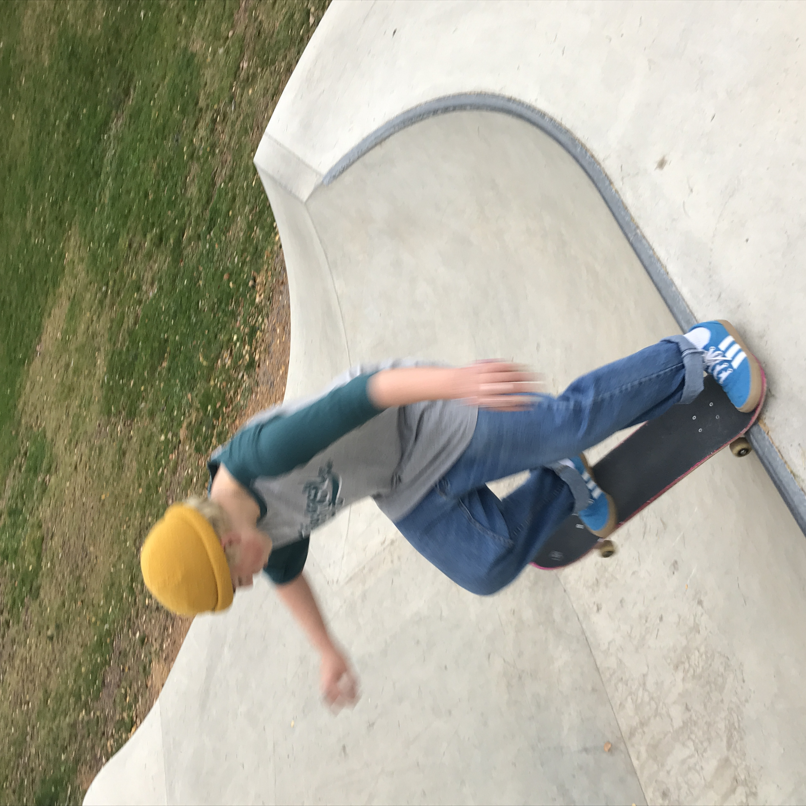 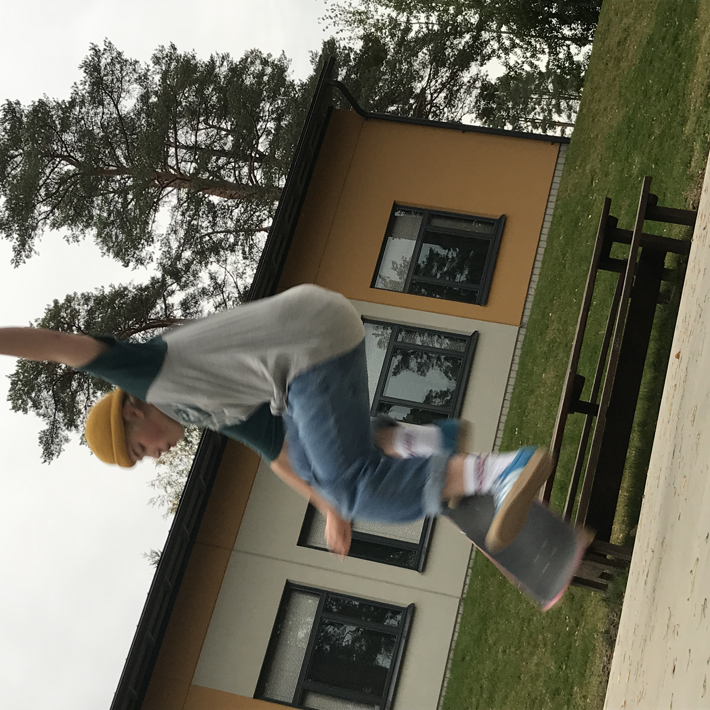 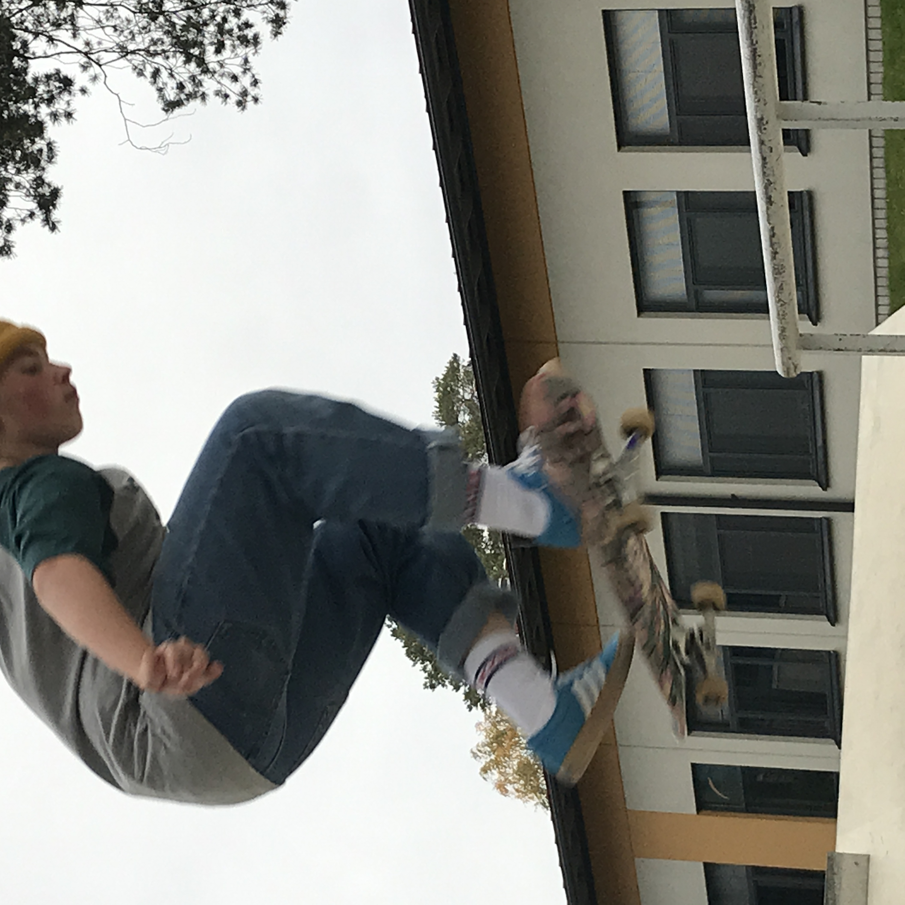 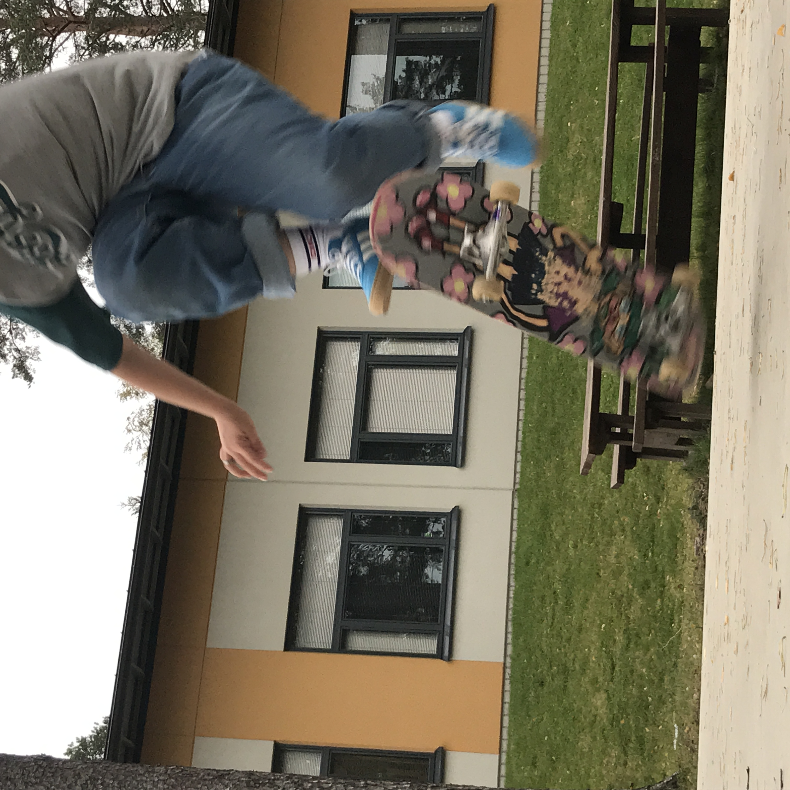 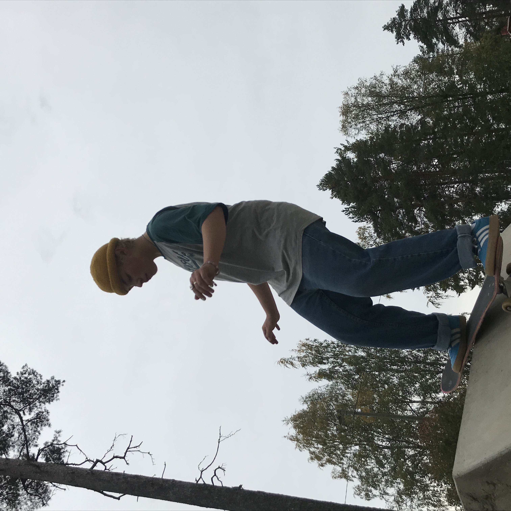Olen alkanut harrastamaan musiikkia noin 14 vuotiaana kun kiinnostuin rock ja metal musiikista ja ostin itselleni ensimmäisen sähkökitaran ja vahvistimen ja aloin sillä opettelemaan. Olin opetuksessa myös vuoden jossa opin paljon. Nykyään tykkään soittaa melkein mitä vaan mikä osuu käteen.
Nykyään kuuntelen kaikenlasita musiikkia ja tykkään myös soittaa eri musiikki genrejä. Haluaisin myös alkaa soittamaan muita instrumentteja. Lempi albumeja:

 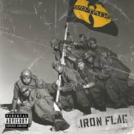
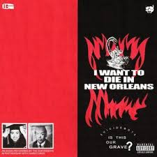
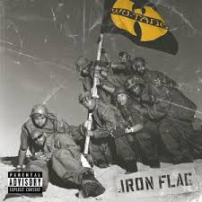
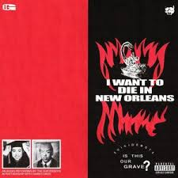
 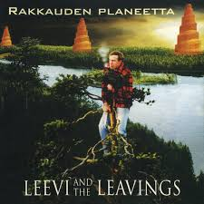
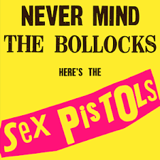
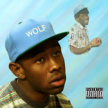
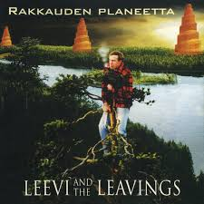
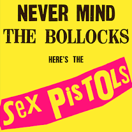
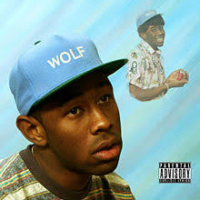